1. Transistor BC547: Transistor BC547 termasuk transistor NPN. Fungsi transistor yaitu untuk memperkuat arus. Arus kecil yang masuk kedalam transistor ini bisa mengontrol arus besar ke emitor dan basis. Fungsi lain dari transistor BC547 selain sebagai penguat arus yaitu sebagai switching.
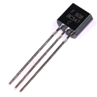2. IC LM358: Modul LM358 adalah sebuah rangkaian terintegrasi yang dirancang untuk sebagai amplifier dengan cara kerja ganda.
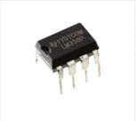3. LED (Light Emitting Diode): Light Emiting Diode (LED) adalah komponen yang dapat memancarkan cahaya. Struktur LED sama dengan dioda. Fungsi LED biasanya sebagai indikator atau petunjuk dalam peralatan dan rangkaian elektronik.
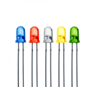4. Resistor 330 Ohm: Resistor adalah komponen elektronika pasif yang digunakan untuk menghambat arus listrik. 330 Ohm adalah nilai hambatan resistornya, yaitu 330 Ohm. Resistor merupakan komponen yang berfungsi untuk menghambat dan mengatur arus listrik di dalam sebuah rangkaian elektronika.
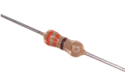5. Resistor 10k Ohm: Resistor adalah komponen elektronika pasif yang digunakan untuk menghambat arus listrik. 10k adalah nilai hambatan resistornya, yaitu 10.000 Ohm. Resistor merupakan komponen yang berfungsi untuk menghambat dan mengatur arus listrik di dalam sebuah rangkaian elektronika.
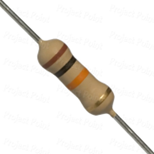6. Kabel Jumper (Female to Female): Kabel jumper female to female adalah jenis kabel jumper yang banyak digunakan untuk menghubungkan antar komponen yang memiliki header male.
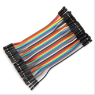7. Kabel Jumper (Male to Male): Kabel jumper ini adalah kabel jumper yang umum digunakan untuk membuat rangkaian elektronik di breadboard.
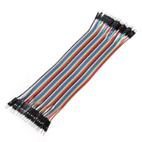8. Breadboard: Breadboard adalah papan yang berfungsi untuk menempatkan dan menyusun piranti atau komponen-komponen elektronika menjadi rangkaian elektronika tanpa penyolderan.
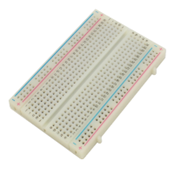9. Baterai 9V: Baterai adalah alat yang digunakan untuk menyimpan energi listrik dalam bentuk kimia kemudian diubah menjadi energi listrik untuk memperoleh arus listrik.
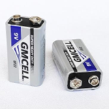10. Kancing baterai: Kancing khusus untuk menghubungkan terminal baterai baterai 9v.
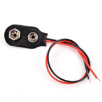11. Sensor PIR: Sensor PIR atau Passive Infrared Receiver merupakan sensor yang digunakan untuk mendeteksi adanya pancaran sinar infra red dari suatu objek. Sensor PIR memiliki sifat pasif, yang berarti tidak memancarkan sinar infra red tetapi hanya dapat menerima radiasi sinar infra red dari luar.

12. Kapasitor 100uF: Kapasitor, atau yang juga dikenal sebagai kondensator, adalah komponen elektronika yang berfungsi menyimpan muatan listrik dalam waktu tertentu. Kapasitor memiliki banyak fungsi dalam dunia elektronika, di antaranya: Menyimpan energi, Menghalangi arus searah, Menyaring sinyal, Mengaman dari kegagalan listrik pada rangkaian listrik yang memiliki kumparan, Mengatur panjang gelombang sinyal pada radio.
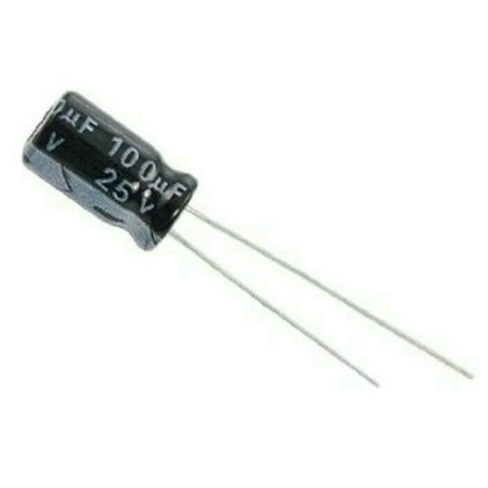1. Alvaboard: ALVAboard merupakan lembaran berongga berkualitas tinggi, terbuat dari bahan polypropylene.
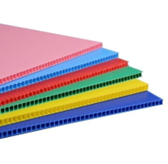2. Plastik mika: Plastik mika merupakan plastik dengan jenis PVC (Polyvinylchloride), yang umumnya dipergunakan diberbagai bidang.
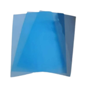3. Alat pemotong (Cutter & gunting): Alat pemotong berbagai macam benda, mulai dari kertas, plastik, hingga kayu yang biasanya terbuat dari bahan metal (steel) dan terdiri atas dua bagian yaitu, bilah pisau serta gagang.
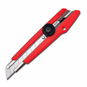 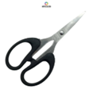4. Lem tembak: Lem tembak atau glue gun adalah salah satu jenis lem yang punya kualitas rekat lebih kuat dan tahan lama.
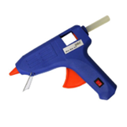5. Isi lem tembak: Isi lem tembak adalah lem yang digunakan untuk lem tembak.
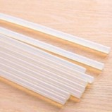6. Penggaris: Penggaris atau mistar adalah sebuah alat pengukur dan alat bantu gambar untuk menggambar garis lurus.
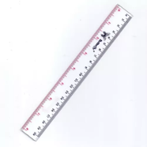